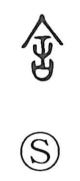

舍

Kun: suteru, yadoru, ie | On: sha
house ・ building ・ lodging ・ to lodge ・ to discard
Explanation
舍 is a compound graph. In its original form it depicts a long, handled needle together with a ritual container (sai) used to hold written prayers to the gods. Like 害, it pictures the act of thrusting the needle into that sacred receptacle, an action that voids the efficacy of the prayers—hence the sense “to throw away,” and this graph later served as the original form of 捨. In the modern standard shapes of 害 and 舎, the needle is shortened so it no longer reaches the container, and thus cannot pierce or spoil it. In bronze inscriptions the character is also used with the meanings “to set in place” and “to bestow,” from which developed the peaceful, domestic senses of “to lodge,” “lodging,” and “house.”